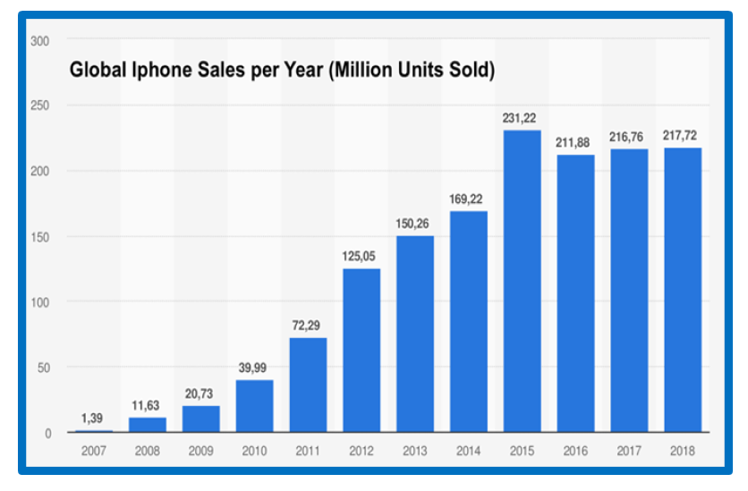
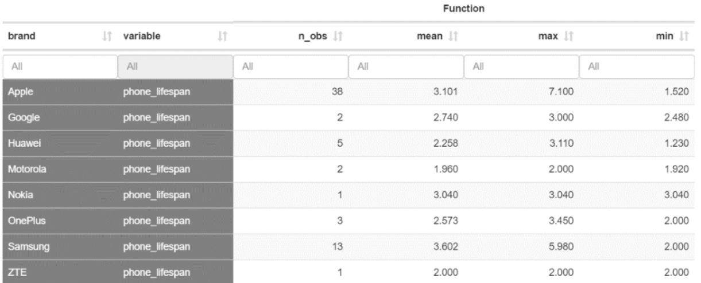
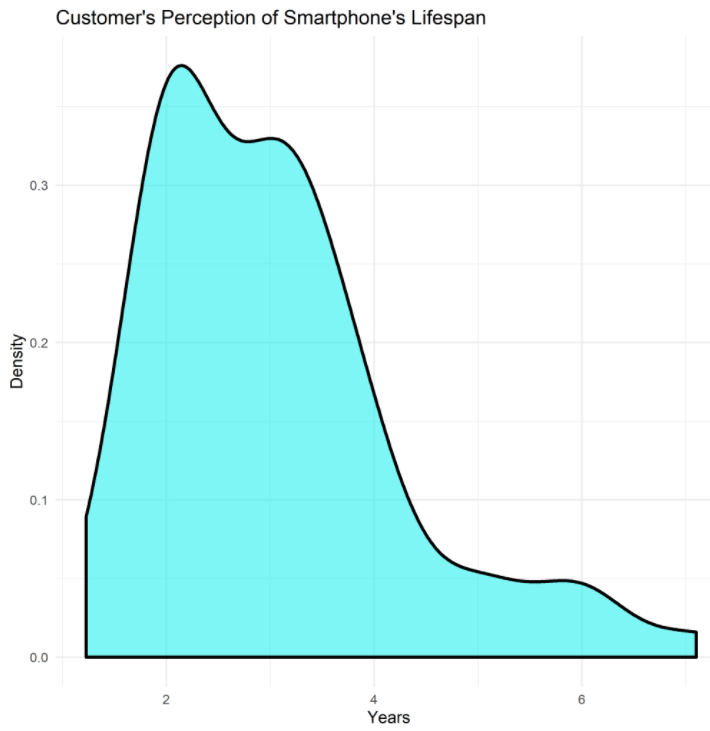
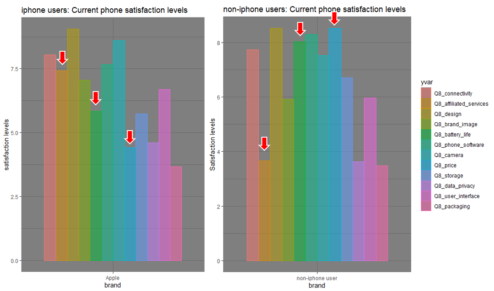
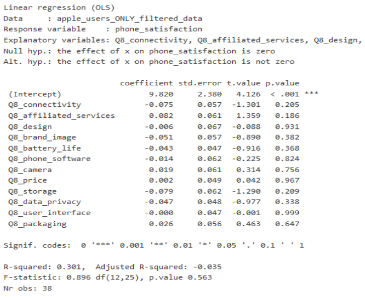
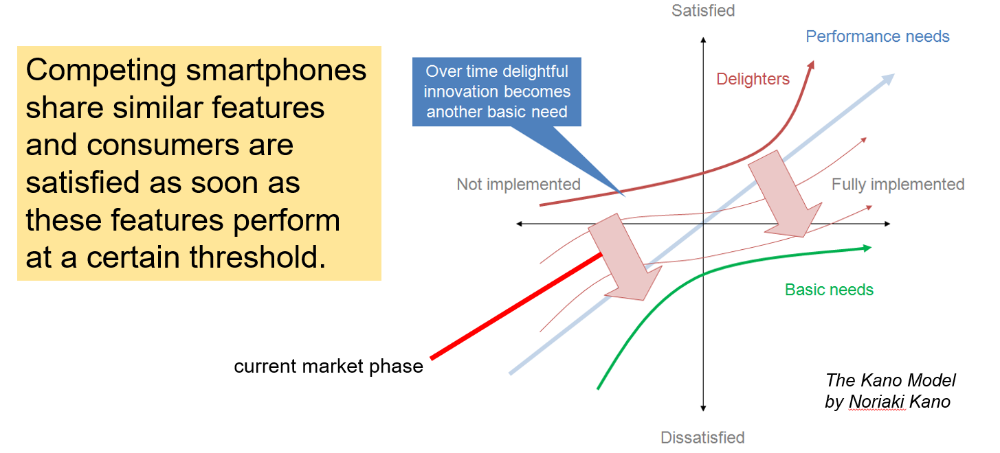
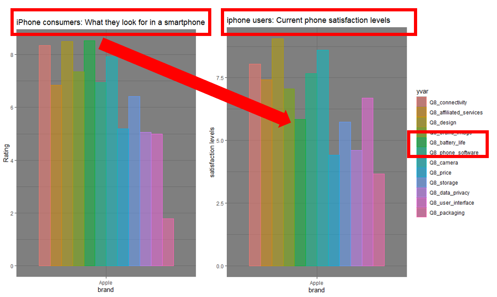
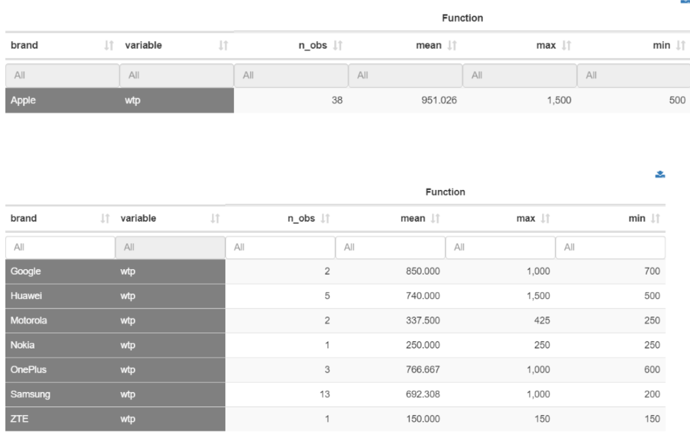

My Role
Market Analysts and Presenter
Time Range
10 Weeks (12/2019)
Team
Zhen Xu, Brendan Ha, Fabian Zanklmaier
Executive Summary
In Q4 of 2017, Apple sold 73.2 million iPhones and garnered 17.9% of the global smartphone market. In just 12 months Apple’s market share in the same market dropped to 15.8% and 64.5 million units sold.
The question management must now answer is what the reason for the iPhone sales decline. This report explains our findings from research focusing on users within the smartphone market to gather data on their thoughts and experiences with smartphones and current smartphone trends. We conducted a qualitative focus group interview followed up by a questionnaire to provide further insights for Apple. Based on our findings, we have derived recommendations for management to reverse the negative trend in sales.
Important findings from our research in this report include the following:
- 79% of iPhone users buy a new smartphone for necessity reasons. There was a shift in the customers' reason for buying a new smartphone from desire to necessity.
- Apple customers keep their iPhone for 3.1 years on average. That is not only longer than a few years ago, but also longer than competitors’ customers keep their smartphone.
- Only 22% of survey respondents perceive the iPhone as an innovative product. 60% of respondents think that new iPhones are too similar to previous models. Customers state that they perceive only minor technical improvements in new iPhones.
- The average customer’s willingness to pay for a new phone is 829 USD while Apple customers are willing to pay 951 USD on average. Of the 74% of non-iPhone users who considered buying an iPhone, 70% said iPhones were too expensive and that is, among others, a reason for them not to buy an iPhone.
Analysis and interpretation of our research found that consumers within the smartphone market are quite similar to each other, regardless if they use an iPhone or not. From our findings we conclude that the smartphone market has reached a level of saturation where technological features are shared by competing products and perform satisfying performance overall. Revolutionary features are introduced rarely and customers act from a necessity to replace their phone for a new one. However, we derived recommendations for Apple to make sure that the company keeps the iPhone as a leader in its competitive environment without losing potential customers.
Introduction
Background: After years of increasing iPhone sales, growth is slowing down for Apple’s iconic smartphone.
The stagnating trend turned into a decline of sales beginning in 2018. Besides losing market share to competitors, contribution of the iPhone to Apple’s total revenue fell below 50% for the first time in years. Management needs to take action to reverse this trend in an increasingly matured, but still growing market.
Research Objectives
The question management has to answer is what the reasons behind the sales decline and how to react. In a multitude of reasons we look at Apple’s customers first. Is the iPhone still meeting their needs as good or better than competing products? Concluding from our analysis, we follow up with recommendations for management to reverse the negative trend.
Method
In order to make recommendations on the managerial decision problem (MDP) on how to respond to the falling sales trend, we conducted an explorative study on consumer attitudes towards the iPhone compared to competing smartphones. The design of our research revolves around the managerial research problem (MRP): How has consumer behavior of smartphone users changed in relation to the iPhone? A focus group interview was conducted to examine customers’ concerns qualitatively. Next, quantitative survey data was analyzed to come up with valid findings.
Before conducting the actual survey, we gather our first insight from a focus group of 4 distinctive individuals, including Apple brand loyal user, price sensitive customer, and socially influenced decision-maker. Click here to see the full report
Focus Group
Based on our focus group’s perception of the iPhone, Apple is still considered as a leader in the smartphone industry. However, they pointed out that there is a redundancy of releasing new iPhones every year with small incremental improvements only, and that Apple is approaching paying limits of customers. From these insights, our group set the following focus for further research: Sales are stagnating because models of different release cycles are too similar to previous ones and do not include enough innovative hardware for customers to invest into a new smartphone. Consumers do not see the need to change their current smartphone and seem to wait until a new seminal flagship appears. To alleviate this problem, Apple could invest more into R&D to create more innovative features. By that, the company could save its best new features for a bi-yearly release to increase hype as the phone is perceived more innovative by different customer groups. That could reduce the lack of innovation customers see with small incremental changes. Even if Apple promoted these incremental changes successful in the past, increasing customer awareness endangers the current release strategy. Another insight to the MRP is that Apple’s increasingly high price point brought down iPhone sales given that its competitors, like Huawei and Samsung, are competing at a different price range packaged with similar or more advanced technological features.
Questionnaire Development
Building off from the focus group’s insights, we created a web survey questionnaire with Qualtrics to find out more about customer’s preferences and satisfaction on smartphones. Click here to see the survey flow
The survey was sent out to participants via social media and e-mail. We received 85 responses, 67 of which are valid for further analysis. We branched several flows within the survey by using filter questions. The flows differentiate between smartphone-/non-smartphone- users, and by iPhone-/non-iPhone- users. We designed the survey to ask questions about satisfaction with current smartphone’s features, as well as pricing and their perception of Apple in the smartphone market. To find out more about how the iPhone differentiates from competitors, we assessed customers’ potential reasons to switch to another brand. Furthermore, we included questions on consumers rebuy behavior and the reasons connected to it. Demographic data was collected in the end of the survey. The data evaluation was done in Radiant.
Sampling Framework: The survey was sent out to the general social media platform. The sample represents potential iPhone customers. However, we did not want to specifically focus on Apple users as we also wanted to assess the barriers that prevent non-iPhone users from buying an iPhone.
Findings
The iPhone turned out to be the smartphone used by more than half of survey participants, followed by Samsung and Huawei models. The three brands together capture 86% of the distribution of phone brands used by participants. From the 42% non-iPhone users, 74% considered buying an iPhone in their purchase decision. Their answers are therefore meaningful for our analysis.
Analyzing the reasons for participants to buy a new smartphone, we found that Apple customers act more from a necessity to buy a new phone than from a desire to have the latest model. While 70% of non-iPhone users stated that necessity is their reason to buy a new phone, it was 79% of iPhone users to say the same. This result is in contrast to a few years ago, when Apple customers could not resist buying the latest iPhone as soon as it’s released as they “crave new technology”
So do Apple customers not act from a desire to have the latest technology anymore? To answer this question, we check for customers’ perception of technological improvement in new models. Our data shows that Apple customers state there are only non to small improvements every year. While 26% of non-iPhone users see moderate to large hardware improvements in the smartphone market every year, only 17% of iPhone users agree. We can make a similar observation for software improvements. This suggests why Apple customers act more out of a necessity when upgrading their smartphone: They do not see sufficient technological improvements in new devices when compared to the one they currently use. 60% of respondents agree on the statement that new iPhones are too similar to previous models. Only 22% perceive the iPhone to be an innovative product. In the next step, we want to analyze how this affects the period of use of their products.
Our data shows that Apple customers keep their iPhone for 3.1 years on average. That is not only longer than a few years ago, but also longer than competitors’ customers keep their smartphone.
 One reason for this is because iPhone users are highly satisfied with the product. Our data tells us that Apple users are on average more satisfied with their smartphone than users of competing brands.
Building on this, we want to look at satisfaction in more detail. We start by comparing a phone’s features. Are there any differences in the satisfaction level of a certain feature between Apple and non-Apple users? Based on our research, smartphone users perceive features to be similarly satisfying when comparing between different brands.
However, there are some key differences between brands. Apple users are dissatisfied with the price of their phone while non-iPhone users are very satisfied with their phone price. Apple users are satisfied with affiliated services of their product (e.g. iCloud) while non-Apple users are less satisfied with it. Non-Apple users are highly satisfied with their phone’s battery life while iPhone users are less satisfied with it. We tried finding causality within these variables for customer satisfaction but could not find any.

This implies that the smartphone market reached a certain level of saturation where competing smartphones share similar features and consumers are satisfied as soon as these features perform at a certain threshold. This responds to the “Kano Model” which describes how the value of attributes of a product to customers changes over time. Features that were innovative and delighted customers when they were part of their smartphone for the first time have now reached a satisfactory level and become standard features shared by many products.
To further verify that, we wanted to know which features customers are currently looking for when they buy a smartphone. It turns out that all smartphone users, iPhone and non-iPhone users, look for similar attributes when they buy a new smartphone.
However, there are a few key differences between users. Apple users care more about design and brand image than non-iPhone users do. Good battery life turns out to be a very important feature of smartphones in both customer groups. Another important finding here is, that there is a gap between iPhone customers’ satisfaction and expectation concerning battery life of the iPhone. Apple customers seem to look for better battery life in a smartphone and are not sufficiently satisfied with their current phone’s battery life. Looking at the features individually, there are none that alone can determine the willingness to pay in either market. This lead us to analyze willingness to pay in the next step.
From our data, we found out that the maximum price consumers were willing to pay for a smartphone is around 829 USD (including taxes) on average. Thereby the willingness to pay of Apple customers (951 USD on average) was about 45% higher than that of competitor’s customers - 658 USD on average shown below.
Looking at the current iPhone market, Apple has exceeded the 1000 USD price range. In a single mean test we illustrated that customers’ willingness to pay in general (p-value < 0.001), and Apple customers’ willingness to pay (p-value < 0.1) truly is below 1000 USD. Non-iPhone users are even less willing to pay 1000 USD or more for a phone than iPhone users. Here, our data suggests that Apple users are not as price sensitive relative to non-Apple consumers. If Apple would lower the price on its models it could eliminate price as a barrier for non-iPhone users to buy an iPhone. From our research above we know that price plays a major role in the purchase decision of this customer group. 58% of respondents think that the iPhone is too expensive. Moreover, 93% of non-iPhone users selected that this is a reason for them not to switch to Apple. Furthermore, of the 74% of non-iPhone users who considered buying an iPhone, 70% say the product is too expensive. As phone satisfaction is linked to a higher willingness to pay, and Apple customers are more satisfied with their phones, removing the price barrier may allow Apple to gain customers with a high customer lifetime value (CLV), who see price as a reason not buy an iPhone.
Recommendations
- Apple should improve the iPhone’s battery life to not lose customers who rate battery life as an important feature in their buying decision.
- Apple should lengthen its release cycle in accordance to changing consumer behavior. This recommendation is connected to customers’ perception of innovation in the market. In line with the “Kano Model”, Apple can promote more technological progress in new models to bring back customers’ desire for new technology.
- Conduct further research on pricing. New iPhones are priced higher than the average customer’s willingness to pay and a more affordable price could persuade customers to buy the product.
Discussion
We consider willingness to pay to be the biggest issue for Apple’s future iPhone sales. The company should conduct price experiments to find out whether it can attract customers away from the competition. Apple may also test to offer other financing options and subscription models for its iPhones.
Furthermore, it needs to be researched whether a biennial release cycle encourages customers to buy the latest iPhone earlier again. In this context, Apple should also evaluate how a greater number of innovative features in a two-year release cycle recommended above translates to willingness to pay in consumers’ psychology.